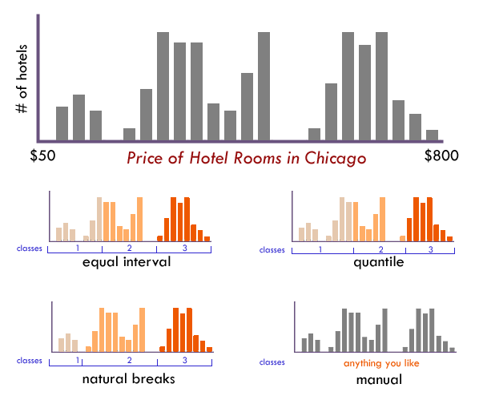
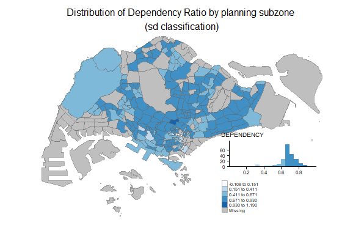
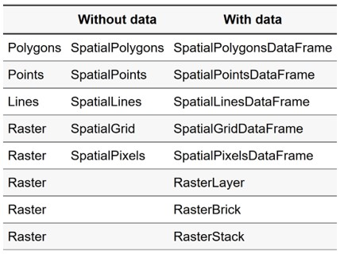

Lesson 3:
Thematic and Analytical Mapping:
tmap Methods
Content
- Choropleth Mapping with in R
- Type of choropleth map
- Choosing number of classes
- Data classification methods
- Selecting colour scheme
- tmap Methods
- tmap framewok
- tmap elements
- tmap layers
- tmap layout
- tmap style
- tmap facet
This lesson consists of two parts. First, I will share with you the concepts and design principles of choropleth maps. Next, I will introduce you to tmap, an R package specially designed for thematic mapping based on Layered Grammar of Graphics
Choropleth Map
A choropleth map is a type of thematic map in which areas are shaded or patterned in proportion to a statistical variable that represents an aggregate summary of a geographic characteristic within each area, such as population or per-capita income.

Classified choropleth map
- Choropleth maps can be either classified or unclassified.
- A classed choropleth map combines areal units into a smaller number of groups. Interval levels may vary, but typically 4 to 7 are used in a map. There is different classification techniques used to divide up the intervals.

Unclassified choropleth map
- Unclassed choropleth maps are similar to classed choropleth maps; however, unclassed choropleth maps do not have an averaged statistic towards each particular colour.

Choosing an appropriate number of classes

The more classes you use, the less data generalization (which is good), but this comes at the expense of legibility and the associated risk of map reading errors since more colors are harder to see and print reliably (which is bad). The key question is how much generalization do you want? A map with 3 classes/colors (e.g., low, medium, high) will be easy to see and remember, but may gloss over some very important aspects of the data and create artificial geographic patterns by lumping together many places that are in fact quite different. There is no ideal number of classes for a map, so experiment.
Data classification

Not sure how many classes to use? Have a look at the distribution of your data in a histogram (see examples below): Are there obvious clusters within your data? Are there large gaps in your data range that suggest nice compact data classes? If so, pick that number of classes and place those class breaks around those clusters.
Methods of choosing classes
- Based on the nature of the distribution
- quantile, equal interval, natural breaks, standard deviations, defined interval
- Arbitrary
- Can be based on round numbers.
- Examples: Grouping according to age or census housing categories
- Can result in empty categories
Data classification method: Quantile
- Same number of features per class.

Data classification method: Equal interval
- Divides the range of attribute values into equally sized classes.

Avoid equal interval if your data are skewed to one end or if you have one or two really large outlier values. Outliers in that case will likely produce empty classes, wasting perfectly good classes with no observations in them. Since the hotel data above doesn’t have really large outliers, this is a data distribution that works well with equal interval.
Data classification method: Jenks (also known as Natural breaks)
- Default Jenk’s statistical optimization
- Finds natural groupings in the data

Data classification: Standard deviation
- A measure of dispersion.
- Use if the distribution approximates a normal distribution (bell-shaped curve)

Colour scheme


Mapping packages in R
Selected popular mapping packages
Other packages
Introducing tmap
- tmap is a R package specially designed for creating thematic maps using the pricinples of the Grammar of Graphics.
- It offers a flexible, layer-based, and easy to use approach to create thematic maps, such as choropleths and proportional symbol maps.
- It supports two modes: plot(static maps) and view (interactive maps).
- It provides shiny integration(with tmapOutput and renderTmap).

Shape objects
- tmap supports simple features from the new sf package.
- It also supports the class Spatial and Raster, respectively from the sp and the raster package. The supported subclasses are:

Plotting functions of tmap
Two approaches can be used to prepare thematic map using tmap, they are:
Plotting a thematic map quickly by using
qtm().Plotting highly customisable thematic map by using tmap elements.
Plotting a choropleth map quickly by using qtm()
The easiest and quickest to draw a choropleth map using tmap is using qtm(). It is concise and provides a good default visualisation in many cases.
tmap_mode()with “plot” option is used to produce a static map. For interactive mode, “view” option should be used.fillargument is used to map the attribute (i.e. DEPENDENCY)
tmap_mode("plot")tmap mode set to plottingqtm(mpszpop2020,
fill = "DEPENDENCY")
tmap elements
tm_shape()
- The first element to start with is
tm_shape(), which specifies the shape object.

tmap elements
Base layers
- Next, one, or a combination of the following drawing layers should be specified:

- Links to
tm_polygons(),tm_symbols(),tm_lines(),tm_raster()andtm_text()
tmap elements
Base layers
- Each of these functions specifies the geometry, mapping, and scaling component of the LGTM.
- An aesthetic can take a constant value, a data variable name, or a vector consisting of values or variable names.
- If a data variable is provided, the scale is automatically configured according to the values of this variable, but can be adjusted with several arguments. For instance, the main scaling arguments for a color aesthetic are color palette, the preferred number of classes, and a style to create classes.
- Also, for each aesthetic, except for the text labels, a legend is automatically created.
- If a vector of variable names is provided, small multiples are created, which will be explained further below.
tmap elements
Derived layers
Each aesthetic can take a constant value or a data variable name. For instance, tm_fill(col="blue") colors all polygons blue, while tm_fill(col="var1"), where “var1” is the name of a data variable in the shape object, creates a choropleth.
The supported derived layers are as follows:

Drawing a base map
The basic building block of tmap is tm_shape() followed by one or more layer elements such as tm_fill() and tm_polygons().
The “+” sign should be place at the end of a code line and not at the front of a code line.
tm_shape(mpszpop2020) +
tm_polygons()
Drawing a choropleth map using tm_polygons()
To draw a choropleth map showing the geographical distribution of a selected variable by planning subzone, we just need to assign the target variable such as DEPENDENCY to tm_polygons().
tm_polygons():
- By default, 5 bins will be used.
- The default data classification method used is called “pretty”.
- The default colour scheme used is “YlOrRd” of ColorBrewer. You will learn more about the color palette later.
- By default, Missing value will be shaded in gray.
tm_shape(mpszpop2020)+
tm_polygons("DEPENDENCY")
Drawing a choropleth map using tm_fill() and tm_border()
- Actually,
tm_polygons()is a wrapper oftm_fill()andtm_border(). tm_fill()shades the polygons by using the default colour scheme.tm_borders()adds the borders of the shapefile onto the choropleth map.- Notice that the planning subzones are shared according to the respective dependency values
tm_shape(mpszpop2020) +
tm_fill("DEPENDENCY")
Drawing a choropleth map using tm_border()
To add the boundary of the planning subzones, tm_border() will be used.
tm_shape(mpszpop2020)+
tm_fill("DEPENDENCY") +
tm_borders(lwd = 0.1,
alpha = 1) Notice that light-gray border lines have been added on the choropleth map.
- lwd = border line width. The default is 1,
- alpha = transparency number between 0 (totally transparent) and 1 (not transparent). By default, the alpha value of the col is used (normally 1),
- col = border colour, and
- lty = border line type. The default is “solid”.
tm_shape(mpszpop2020)+
tm_fill("DEPENDENCY") +
tm_borders(lwd = 0.1,
alpha = 1)
Data classification methods of tmap
Most choropleth maps employ some method of data classification. The point of classification is to take a large number of observations and group them into data ranges or classes.
- tmap provides a total ten data classification methods, namely: fixed, sd, equal, pretty (default), quantile, kmeans, hclust, bclust, fisher, and jenks.
- To define a data classification method, the style argument of
tm_fill()ortm_polygons()will be used. - The choropleth map on the right shows a quantile data classification with 8 classes are used.
tm_shape(mpszpop2020)+
tm_fill("DEPENDENCY",
n = 8,
style = "quantile") +
tm_borders(alpha = 0.5)
Comparing Quantile and Equal Interval
Choropleth maps on the left and right below show quantile and equal data classification methods are used.
- Notice that the distribution of quantile data classification method are more evenly distributed then equal data classification method.
tm_shape(mpszpop2020)+
tm_fill("DEPENDENCY",
n = 6,
style = "quantile") +
tm_borders(alpha = 0.5)
tm_shape(mpszpop2020)+
tm_fill("DEPENDENCY",
n = 6,
style = "equal") +
tm_borders(alpha = 0.5)
Colour Scheme
tmap supports colour ramps either defined by the user or a set of predefined colour ramps from the RColorBrewer package.
- To change the colour, we assign the preferred colour to palette argument of
tm_fill(). - Notice that the word blues is used instead of blue and the alphabet b is in uppercase.
tm_shape(mpszpop2020)+
tm_fill("DEPENDENCY",
n = 6,
style = "quantile",
palette = "Blues") +
tm_borders(alpha = 0.5)
More about colour
- To reverse the colour shading, add a “-” prefix.
tm_shape(mpszpop2020)+
tm_fill("DEPENDENCY",
style = "quantile",
palette = "-Blues") +
tm_borders(alpha = 0.5)
Notice that the colour scheme has been reversed.
tmap Layouts
Map layout refers to the combination of all map elements into a cohensive map.
- Map elements include among others the objects to be mapped, the title, the scale bar, the compass, margins and aspects ratios, while the colour settings and data classification methods covered in the previous section relate to the palette and break-points used to affect how the map looks.
tmap Legend
In tmap, several legend options are provided to change the placement, format and appearance of the legend.
tm_shape(mpszpop2020)+
tm_fill("DEPENDENCY",
style = "jenks",
palette = "Blues",
legend.hist = TRUE,
legend.is.portrait = TRUE,
legend.hist.z = 0.1) +
tm_layout(main.title = "Distribution of Dependency Ratio by planning subzone \n(Jenks classification)",
main.title.position = "center",
main.title.size = 1,
legend.height = 0.45,
legend.width = 0.35,
legend.outside = FALSE,
legend.position = c("right", "bottom"),
frame = FALSE) +
tm_borders(alpha = 0.5)
tmap style
tmap allows a wide variety of layout settings to be changed. They can be called by using tmap_style().
- “white”: White background, commonly used colors (default)
- “gray”/“grey”: Grey background, useful to highlight sequential palettes (e.g. in choropleths)
- “natural”: Emulation of natural view: blue waters and green land
- “bw”: Greyscale, obviously useful for greyscale printing
- “classic”: Classic styled maps (recommended)
- “cobalt”: Inspired by latex beamer style cobalt
- “albatross”: Inspired by latex beamer style albatross
- “beaver”: Inspired by latex beamer style beaver
Chloropleth map below is plotted by using classic style.
tm_shape(mpszpop2020)+
tm_fill("DEPENDENCY",
style = "quantile",
palette = "-Greens") +
tm_borders(alpha = 0.5) +
tmap_style("classic")tmap style set to "classic"other available styles are: "white", "gray", "natural", "cobalt", "col_blind", "albatross", "beaver", "bw", "watercolor" 
Cartographic Furniture
Beside map style, tmap also also provides arguments to draw other map furniture such as compass, scale bar and grid lines. In the choropleth below, tm_compass(), tm_scale_bar() and tm_grid() are used to add compass, scale bar and grid lines onto the choropleth map.
tm_shape(mpszpop2020)+
tm_fill("DEPENDENCY",
style = "quantile",
palette = "Blues",
title = "No. of persons") +
tm_layout(main.title = "Distribution of Dependency Ratio \nby planning subzone",
main.title.position = "center",
main.title.size = 1.2,
legend.height = 0.45,
legend.width = 0.35,
frame = TRUE) +
tm_borders(alpha = 0.5) +
tm_compass(type="8star", size = 2) +
tm_scale_bar(width = 0.15) +
tm_grid(lwd = 0.1, alpha = 0.2) +
tm_credits("Source: Planning Sub-zone boundary from Urban Redevelopment Authorithy (URA)\n and Population data from Department of Statistics DOS",
position = c("left", "bottom"))tmap style set to "white"other available styles are: "gray", "natural", "cobalt", "col_blind", "albatross", "beaver", "bw", "classic", "watercolor" 
Drawing Small Multiple Choropleth Maps
Small multiple maps, also refered to facet maps, are composed of many maps arrange side-by-side, and sometimes stacked vertically. Small multiple maps enable the visualisation of how spatial relationships change with respect to another variable, such as time.
In tmap, small multiple maps can be plotted in three ways:
- by assigning multiple values to at least one of the asthetic arguments,
- by defining a group-by variable in tm_facets(), and
- by creating multiple stand-alone maps with tmap_arrange().
By assigning multiple values to at least one of the aesthetic arguments
In this example, small multiple choropleth maps are created by defining ncols in tm_fill().
tm_shape(mpszpop2020)+
tm_fill(c("YOUNG", "AGED"),
style = "equal",
palette = "Blues") +
tm_layout(legend.position = c("right", "bottom")) +
tm_borders(alpha = 0.5) +
tmap_style("white")tmap style set to "white"other available styles are: "gray", "natural", "cobalt", "col_blind", "albatross", "beaver", "bw", "classic", "watercolor" 
By assigning multiple values to at least one of the aesthetic arguments
In this example, small multiple choropleth maps are created by assigning multiple values to at least one of the aesthetic arguments
tm_shape(mpszpop2020)+
tm_polygons(c("DEPENDENCY","AGED"),
style = c("equal", "quantile"),
palette = list("Blues","Greens")) +
tm_layout(legend.position = c("right", "bottom"))
By creating multiple stand-alone maps with tmap_arrange()
In this example, multiple small choropleth maps are created by creating multiple stand-alone maps with tmap_arrange().
youngmap <- tm_shape(mpszpop2020)+
tm_polygons("YOUNG",
style = "quantile",
palette = "Blues")
agedmap <- tm_shape(mpszpop2020)+
tm_polygons("AGED",
style = "quantile",
palette = "Blues")
tmap_arrange(youngmap,
agedmap,
ncol=1)
By defining a group-by variable in tm_facets()
In this example, multiple small choropleth maps are created by using tm_facets().
tm_shape(mpszpop2020) +
tm_fill("DEPENDENCY",
style = "quantile",
palette = "Blues",
thres.poly = 0) +
tm_facets(by="REGION_N",
free.coords=TRUE,
drop.shapes=TRUE) +
tm_layout(legend.show = FALSE,
title.position = c("center",
"center"),
title.size = 20) +
tm_borders(alpha = 0.5)Warning: The argument drop.shapes has been renamed to drop.units, and is
therefore deprecated
Mappping Spatial Object Meeting a Selection Criterion
Instead of creating small multiple choropleth map, you can also use selection function to map spatial objects meeting the selection criterion.
tm_shape(mpszpop2020
[mpszpop2020$REGION_N=="CENTRAL REGION", ]) +
tm_fill("DEPENDENCY",
style = "quantile",
palette = "Blues",
legend.hist = TRUE,
legend.is.portrait = TRUE,
legend.hist.z = 0.1) +
tm_layout(legend.outside = TRUE,
legend.height = 0.45,
legend.width = 5.0,
legend.position = c("right",
"bottom"),
frame = FALSE) +
tm_borders(alpha = 0.5)Warning in pre_process_gt(x, interactive = interactive, orig_crs =
gm$shape.orig_crs): legend.width controls the width of the legend within a map.
Please use legend.outside.size to control the width of the outside legend
Reference
Principles, Concepts and Methods of Choropleth Maps Design
Core Reading
Additional Readings